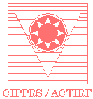

|
Important dates in
2007:
January 12:
Tier 1 submissions
March 6: Acceptance/rejection sent
March 21: Final paper due
April 10: Tier 2 submission due
April 30: Final poster/demo due
May 28-30: Workshop is held
Call for Papers:
txt, pdf
Authors: Submission instructions
Experts: interested
in joining
Program or Reviewing Committee
in future workshops ?
Companies:
interested to sponsor
an award or future workshops ?
Program Chairs:
Robert Laganière
,
U. of Ottawa, Canada
VideoRec07@computer-vision.org
Qiang
Ji,
Rensselaer Polytechnic Inst., USA
VideoRec07@computer-vision.org
Program Committee:
Andy Adler
,
Carleton University, Canada
Haizhou Ai
,
Tsinghua University, China
Jake
Aggarwal,
U. of Texas, USA
Bubaker Boufama,
U. of Windsor, Canada
Rama
Chellappa,
UMD, USA
Langis Gagnon
CRIM, Canada
Dmitry
O. Gorodnichy
IIT-NRC, Canada
Ralph
Gross,
CMU, USA
Anthony Hoogs,
GE Global Research, USA
Anil Jain,
Michigan State U., USA
Jim Little,
U. of British Columbia, Canada
Michael J. Lyons,
ATR, Japan
Aleix M. Martinez
,
Ohio State University, USA
Amar
Mitiche,
INRS, Canada
Sinjini Mitra,
U. of Southern California, USA
Matthew Turk
,
U. of California at Saint Barbara, USA
Lijun Yin,
SUNY at Binghamton, USA
Djemel
Ziou,
U. de Sherbrooke, Canada
Hongbin Zha
,
Beijing University, China
Past workshops:
VP4S-06
(jointly with CRV'06)
FPiV'05
(jointly with CRV'05)
FPiV'04 (jointly with CVPR'04)
Joint conferences:
AI 2007,
GI 2007, CRV
2007
Related Resources:
www.visioninterface.net
- links to
Canadian Computer Vision companies
and labs and affiliated resources


|
The First International Workshop on Video Processing and Recognition (VideoRec'07)
is the fourth in a sequence of workshops organized in the area of video processing: FPiV'04
, FPiV'05
and VP4S-06.
As its predecessors, the VideoRec'07 workshop is dedicated to
the problems of processing and recognizing video
data, in particular such as coming from TV, surveillance
cameras or web/PDA cameras.
Submission and reviewing procedure: two-tier archival system
Logistically, VideoRec'07 follows the organization and standards set
by the last year's Workshop on Video Processing for
Security (VP4S-06),
which aims at both:
i) distinguishing the papers that contribute
significantly to the advances in the area, and
ii) providing the forum for
discussing and presenting the results for students, researchers and industries.
To achieve both of these goals, the workshop uses a two-tier submission
procedure.
Tier I submissions: submission and reviewing process
For the Tier I, the original full-size (not more than 8 pages) papers written
analyzing video context for recognition and understanding applications are welcomed for submission. Each
Tier I submission will be reviewed by three Program Committee
members. Reviewing is double blind (author don't know the
reviewers, reviewers don't know the authors). The goal is to have as vigorous and fair reviewing of all
papers as possible.
The Tier I accepted papers will be
presented at the oral session and published by IEEE as part of the CRV'07 Proceedings.
A CD version of the Proceedings will be distributed at the CRV'07 conference (archived into the IEEE Computer
Society's digital library and the IEEE's XPlore and IEL digital libraries and
indexed through the INSPEC indexing service).
For the Tier II, the workshop invites submissions that are not or
may not be accepted for IEEE publishing. This includes late full papers,
posters, demos, student projects reports,
industrial projects presentations submissions etc. There are no
restrictions on the size of the Tier II submissions.
The Tier II accepted submissions will be
presented at the poster session and will be published at the conference
web-site archived by the CIPPRS.
Invited topics include but are not limited to:
- all aspects of surveillance and monitoring
- faces in video: tracking, detecting,
memorizing and recognizing faces in video
- people in video: tracking and backtracking people in video,
pedestrians
- objects in video: searching and tracking, vehicles
- scene and activity in video: detection and annotation
- video-based alarm systems and video for crime prevention
- making video more intelligent
- multiple-person and gang tracking
- multi-camera people tracking
- video for biometrics, soft- and hard- biometrics from video
- face biometrics, modeling, and models
- facial expression recognition and classification, and representation
- combining video data with other sensor data: range, photo,
fingerprints
- video over internet, issues related to privacy of video
- performance evaluation for face in video problems
- video-based benchmarks and databases
- processing of video from stereo and panoramic cameras
- combining video and audio for person detection/recognition
- video-based interfaces and computer-human interaction for security
- analyzing multiplexed video, demultiplexing of video
- improving quality of video: anti-aliasing and super-resolution
- video event detection and recognition
- video database mining
- rigid and non-rigid 3D motion estimation from video
For paper formatting and submission instructions visit Authors
Page (Submission Instructions).
Workshop proceedings. The Tier I selected papers will be published by IEEE as part of the
CRV'07 Proceedings electronically (archived into the IEEE Computer
Society's digital library and the IEEE's XPlore and IEL digital libraries and
indexed through the INSPEC indexing service). - See
Tier I submissions procedure.
The Tier II accepted submissions will be published online at the CIPPRS-sponsored
workshop web-site. - See Tier II submissions
procedure.
Workshop Layout. Following the layout of its predecessors, the VideoRec07
workshop will be held as a Special Session of the CRV'06 conference and
will consist of an oral section, where the papers accepted for IEEE
publication will be presented, and an poster/demo session, which will be held
concurrently with the poster session of joint conferences (AI'07,
GI'07, CRV'07),
where other Tier II accepted submissions will be presented.
Registration
Who can attend: Participation
in the workshop without submitting a paper is welcomed. -
For a single registration fee, the workshop participants will
also be able to attend the joint conferences. Conversely, the
Workshop is open to all AI/GI/CRV'2007
attendees. Student participation is encouraged by
significantly discounted registration fees.
About
venue: Motreal offers the visitors a variety of affordable and interesting places to visit.
Sponsors and organizers:
This workshop is organized by:
Dmitry
O. Gorodnichy,
Computational Video Group, Institute
of Information Technology, National Research Council of Canada
This workshop is sponsored by:
|